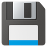

Emplettes
Mode d'emploi
La liste de courses du foyer, préparée à plusieurs, faite dans l'ordre des rayons. Version 0.7.

1. Les principes
L'application compte quatre onglets, en bas de l'écran : Accueil, Préparer, Courses et Gérer. Toutes les fenêtres ont les mêmes gestes.
- Changer d'onglet : glisser le doigt à gauche ou à droite sur le bandeau du haut, ou sur une zone libre de la fenêtre.
- Des listes serrées : toutes les listes ont des lignes serrées sous de minces bandeaux.
- Toucher une ligne en ouvre le volet du bas : son détail, puis ses actions. Deux appuis rapides font l'action principale.
- Glisser une ligne à gauche supprime ou retire (« Annuler » apparaît quelques secondes en bas) ; à droite, elle fait l'action principale.
- Les volets du bas se ferment en tirant la poignée vers le bas, ou en touchant à côté.
- Toucher le titre de la fenêtre (avec la petite flèche) propose ses actions et son aide ; toucher un bandeau propose les actions de son groupe.
- En bas de l'écran ne restent que les boutons qui font avancer une liste : Nouvelle liste, Liste prête, Pause, Terminer.
- Le nuage en haut à droite indique l'état de la synchronisation avec le foyer.
2. L'accueil
L'accueil rassemble ce qui est en cours.
- Comment ça marche rappelle les étapes : je paramètre une fois, je prépare ma liste, je la valide, je fais mes courses. Touchez une étape pour son explication.
- En préparation : les listes que vous êtes en train de construire.
- À faire : les listes prêtes pour les courses.
- Courses en cours : des courses interrompues par « Pause ».
Touchez une liste pour ce que vous pouvez en faire. Une nouvelle liste se crée dans l'onglet Préparer.


3. Créer une liste
Dans l'onglet Préparer, « Nouvelle liste » : choisissez le magasin, puis vérifiez le nom de la liste (magasin, date et heure, à modifier si vous voulez ; deux listes ne peuvent pas porter le même nom). Choisissez ensuite le point de départ :
- Nouvelle liste, par secteur : vous cherchez les articles un à un, ils se rangent sous leur secteur.
- Nouvelle liste simple : les articles s'ajoutent les uns sous les autres, sans rayons ni secteurs. À la fin, la liste peut être rangée par rayons et secteurs.
- Depuis une liste type : une liste enregistrée sous un nom (ex. « Petit-déjeuner »), ou une liste vide.
- Depuis une course passée : une de vos dernières courses ; cochez les articles à reprendre.
- Depuis un texte : collez le texte d'une liste (mail, message, note) ; les articles sont reconnus dans le catalogue, vous décochez ceux à ne pas garder.
- Compléter des courses (rectificative) : des articles à ajouter à des courses en cours ; celui qui les fait accepte ou refuse.
- Liste calculée : à partir de vos tickets de caisse, prévue plus tard.


4. Remplir et valider la liste
- Le champ de recherche, sous le titre : tapez au moins trois lettres, les articles dont un mot commence ainsi s'affichent. Touchez-en un : il s'ajoute à la liste et l'écran va sur lui. Absent du catalogue ? Touchez « Créer « … » ».
- La promotion : juste après l'ajout, un volet propose sa nature (prix promo, lot, prix global, remise, fidélité…) et une seule valeur à saisir. Elle s'affiche ensuite en couleur sur la ligne (ex. « PX2,50€ »).
- La liste a la même présentation que pendant les courses : de minces bandeaux de secteur dans l'ordre de votre parcours, une ligne par article, avec la mesure, le packaging et la consigne.
- − et + règlent la quantité ; à 0, l'article est retiré (« Annuler » le remet).
- Toucher la ligne ouvre son volet : consigne, marque (les marques de son secteur), promotion, packaging.
- « Liste prête » la valide : commentaire pour celui qui fera les courses, enregistrement comme liste type, envoi par mail. La liste passe alors dans les courses à faire.


5. Faire les courses
L'onglet Courses suit la vie des listes, en une seule liste : À faire (les listes prêtes), En cours (des courses mises en pause), Terminées (avec ou sans ticket), puis l'historique et les archives.
- Partir : touchez une liste à faire puis « Faire les courses ». Une fenêtre demande qui fait les courses et avec quel parcours ; « Enregistrer le parcours » l'apprend.
- En magasin, la liste suit l'ordre des allées. Touchez un article quand il est dans le chariot : il est barré et grisé, à sa place. Touchez-le de nouveau pour le décocher.
- Deux appuis sur un article absent du rayon (ou un appui long) : il est marqué « manquant », en rouge.
- Pause interrompt les courses sans rien perdre.
- Terminer affiche les articles manquants et non cochés, propose d'envoyer un résumé au foyer, puis range la course en attente de son ticket.


6. Après les courses
- Terminées : touchez une course pour joindre le ticket de caisse (fichier PDF) ; glissez-la vers la droite pour la mettre dans l'historique.
- Ticket reçu dans l'application du magasin : touchez « Partager » et choisissez Emplettes, ou ouvrez le PDF avec Emplettes. L'application demande à quelle course le joindre.
- Historique et archives : touchez une course pour voir ou joindre son ticket, en faire une liste type, l'archiver ou la remettre en historique. Les courses de plus de trois mois passent aux archives (réglable dans Données).


7. Le foyer et ses membres
- Seul ou en foyer : au premier lancement, on choisit « Seul, sur cet appareil », « Créer un foyer » ou « Rejoindre un foyer ». Seul, on peut passer en foyer plus tard (Gérer › Foyer).
- Code de partage : à saisir sur un autre appareil (« Rejoindre un foyer ») ; chacun choisit ensuite son nom dans la liste des membres. Pas de compte, pas de mot de passe. Les données du foyer sont chiffrées avec ce code.
- Membres : touchez un membre pour lui envoyer l'invitation par mail (code et liens d'installation), le renommer ou le retirer du foyer.
- Appareil partagé (tablette, PC de la famille) : on choisit son nom à chaque lancement.
- Collaboration : les notifications envoyées à tout le foyer et les mails ; on est prévenu même application fermée : sur Android, il suffit d'accepter les notifications ; dans le navigateur, « Recevoir les notifications sur cet appareil ».


8. Magasins et catalogue
- Magasins : communs à tout le foyer ; touchez un magasin pour ses parcours (appris pendant les courses, un par membre), le renommer ou le supprimer. Son historique part alors dans les archives.
- Catalogue des produits : le même dans tous les magasins, rangé par rayons et secteurs. Touchez un secteur pour voir ses produits ou en ajouter un (nom, marque, mesure, packaging). Un petit + signale ce que le foyer a ajouté. Le catalogue s'enrichit des ajouts de tous les foyers.
- Catalogue des marques : les marques de chaque secteur, proposées en préparation.
- Types de promotion, de mesure (poids, volume, à la pièce) et de packaging (lots de 2 à 10…).



9. Apparence, données, sauvegardes
- Apparence : la palette de l'application (17 au choix) et les couleurs des cadres des promotions, mesures et packagings, avec un aperçu.
- Sauvegardes : une copie est faite à chaque étape importante (liste prête, courses terminées, catalogue, foyer), seulement si quelque chose a changé. Les trois dernières sont gardées, et une plus ancienne d'au moins un mois. « Sauvegarder maintenant » donne un fichier à garder ailleurs (Drive, mail, ordinateur) ; « Depuis un fichier » restaure.
- Données : préliste, passage de l'historique aux archives, suppression automatique des archives.
- Corbeille : ce qui a été supprimé, à restaurer ou à effacer pour de bon.